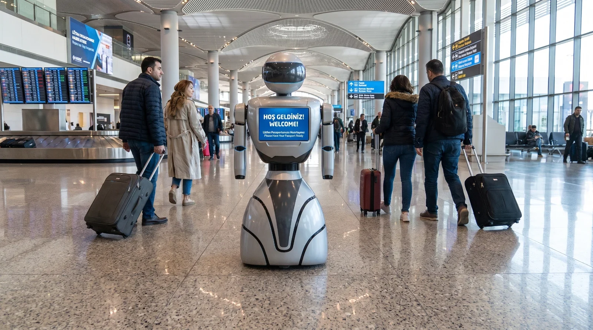
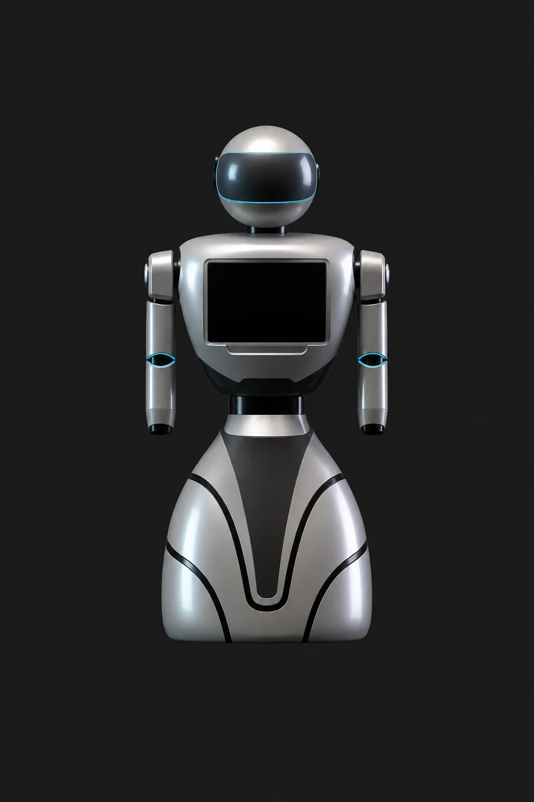
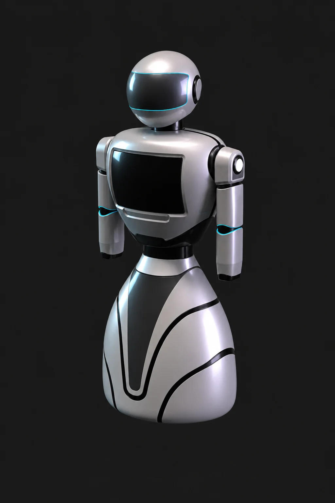
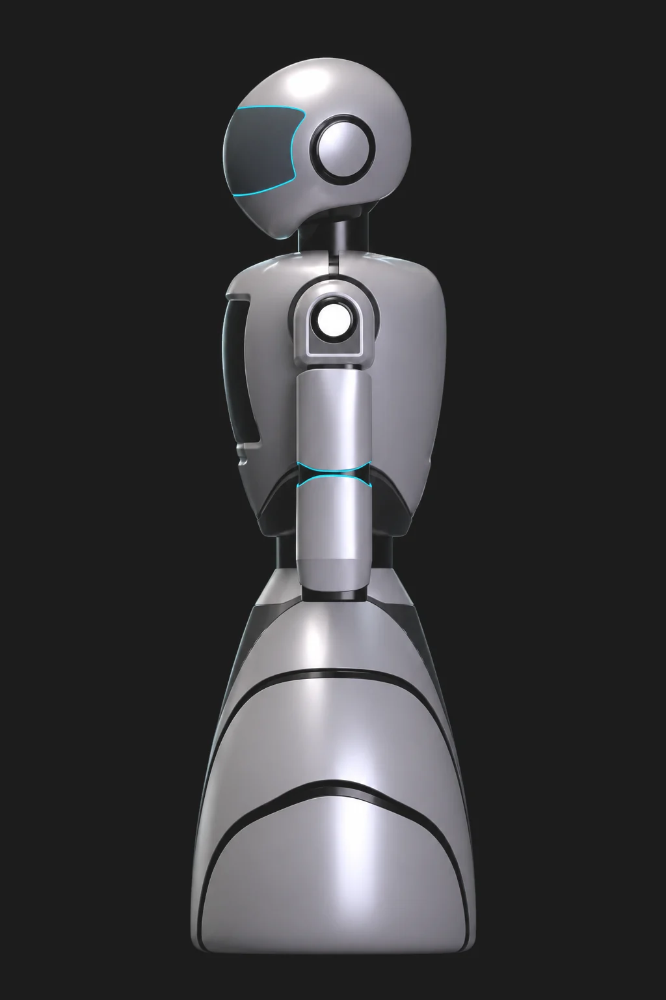

Tabela yerine karşılayan bir ünite
Büyük terminallerde yolcunun ilk teması bir tabela ya da kalabalık bir bankodur. Bu proje, gelen yolcuyu adım hizasında karşılayan, konuşan ve yönlendiren mobil bir karşılama ünitesi öneriyor.
Form dili bilinçli olarak yumuşak tutuldu: geniş tabanlı damla gövde, yuvarlatılmış omuz hattı ve küre başlık insansı ama tehditkâr olmayan bir siluet kuruyor. Göğüs ekranı yolcunun göz hizasının hemen altında, okunması kolay bir açıda konumlandı.
Robot, yaklaşan yolcuyu iki metre mesafeden algılar ve gövdesini ona döndürür. Ekranda çok dilli karşılama mesajı, sesle de uçuş ve kapı bilgisi verir; gerektiğinde yolcuya pasaport kontrolüne kadar eşlik eder.
Gövde üç kütleye ayrıldı: dengeyi taşıyan damla taban, ekranı barındıran gövde ve iletişimi kuran küre başlık. ABS/PC kabuk mat gümüş, trimler siyahtır.



Geniş taban ağırlık merkezini yerde tutar ve üniteyi devrilmeye karşı güvenli kılar. Tahrik, omni-yönlü üç tekerlekle sağlanır.
Kollar gövdeden ayrık modüller olarak çözüldü; işaret etme jesti ve bagaj yönlendirmesi için hareket serbestliği artarken sıkışma riski azaldı.
Başlık, bakış yönünü okunur kılan tek hareketli parçadır. Kol ve başlıktaki mavi ışık hattı hazır, meşgul ve şarj durumlarını gösterir.
LiDAR, derinlik kamerası ve ultrasonik sensörler yaklaşan yolcuyu algılar. 15,6 inç öne eğimli ekran ve altı mikrofonlu dizi çok dilli karşılamayı taşır.